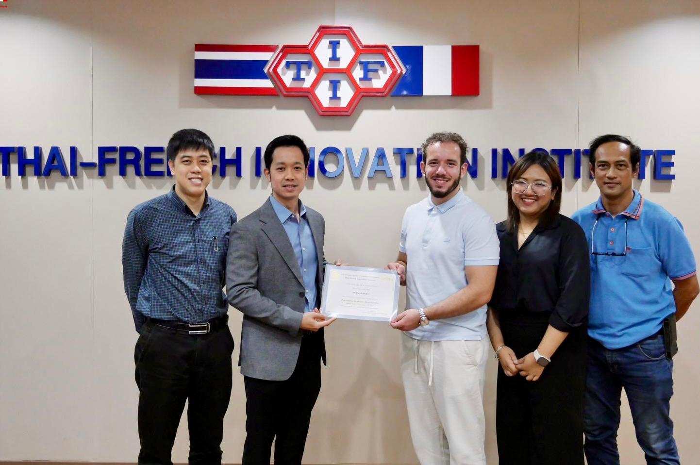

Explore and download my lab documents created during my internship in Thailand
Hello, my name is Enzo CHERIF, a student at SeaTech in the SYSMER track (Mechatronics and Robotics). This website was created to showcase my work during my internship at the Thai-French Innovation Institute (TFII), King Mongkut's University of Technology North Bangkok.
All the lab documents presented here were created by me under the supervision of my mentor, Mr. Burin Yudwong. These labs cover various topics in electronics and energy systems, aiming to provide a comprehensive learning resource for future students.
Feel free to download and explore the content of each lab below.
If you're curious about my internship experience at TFII and would like more in-depth details about my work, you can download my internship report below:
Download My Internship ReportIf you have questions about the labs or my journey, or if you'd like to connect, feel free to email me:
enzocherife@gmail.com